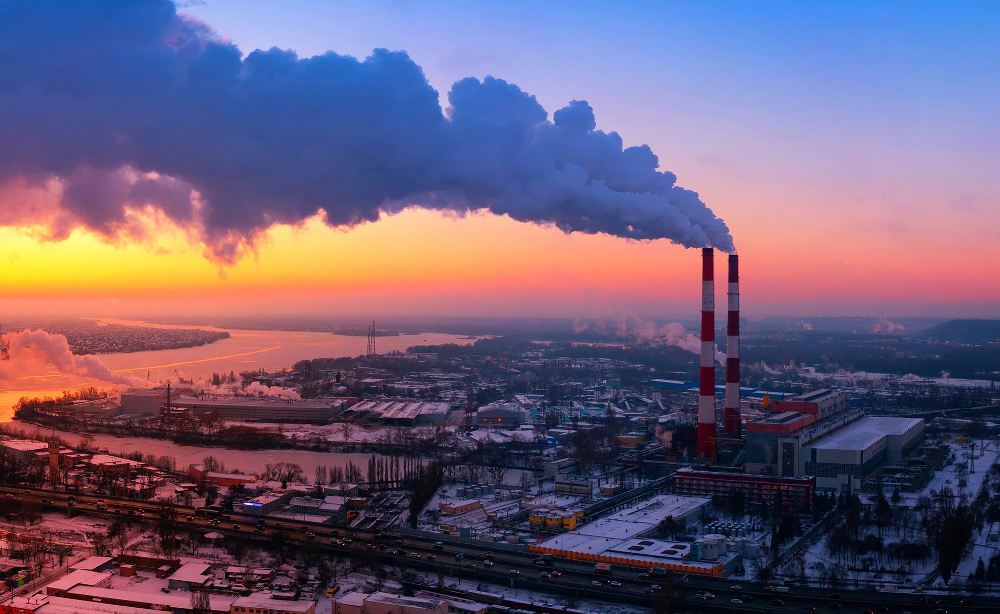

El 99% de la población respira aire más contaminado de lo recomendado, según la Organización Mundial de la Salud (OMS). Partículas en suspensión y gases producidos por el tráfico rodado, la industria y las calefacciones son los principales causantes de la contaminación atmosférica. La legislación y los programas de vigilancia y control son claves para proteger nuestra salud.
“La contaminación atmosférica es una de las partes de la contaminación ambiental. Es la que afecta al aire que respiramos y abarca los gases y los compuestos que inhalamos”, explica Adonina Tardón, catedrática y directora del Área de Medicina Preventiva y Salud Pública de la Universidad de Oviedo. “El de la niebla de Londres es quizá el caso más conocido, pero fue a mediados del siglo pasado que empezamos a darnos cuenta de que las grandes ciudades de Europa y EE. UU. estaban empezando a sufrir episodios agudos de contaminación del aire que afectaban a la salud de las personas”.
Existen diferentes tipos de sustancias contaminantes del aire. En la actualidad, por ejemplo, la legislación europea regula la presencia de 15 contaminantes relacionados con la calidad del aire. Sin embargo, hay cuatro agentes contaminantes que destacan por encima del resto, tal como explica Xavier Querol, del Instituto de Diagnóstico Ambiental y Estudios del Agua (IDAEA - CSIC), en este artículo:
La mala calidad del aire tiene, sobre todo, efectos en la salud de las personas que lo respiran, aunque tampoco deben subestimarse sus impactos ambientales. De acuerdo con la Agencia Europea del Medioambiente, la contaminación del aire provoca: